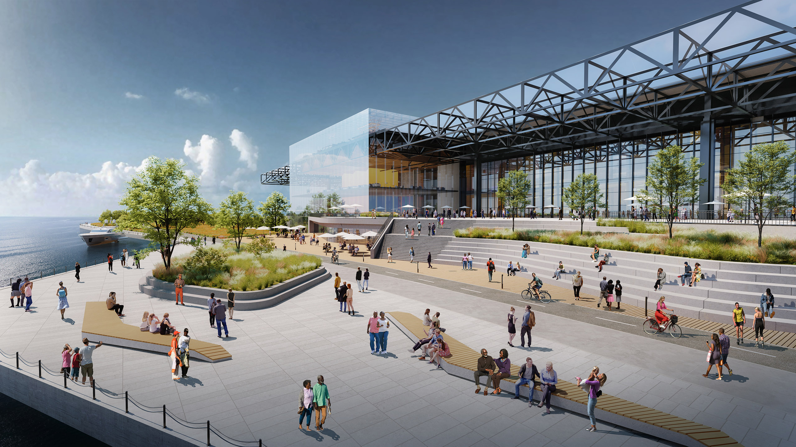

LAKESIDE CENTER REIMAGINED





A critical reimagining of C. F. Murphy's brutalist McCormick Place East, also known as the Lakeside Center. This intervention acts as a mediator between the dense urban fabric of Chicago and the immediate lakefront. Utilizing locally sourced materials and parametric structural principles, the space is designed to facilitate communal gathering while respecting the heavy, monumental geometry of the existing context.